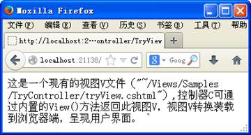
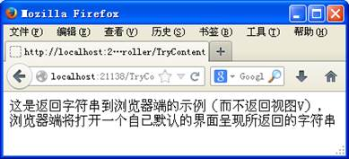
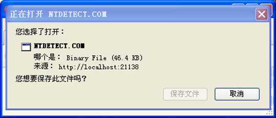
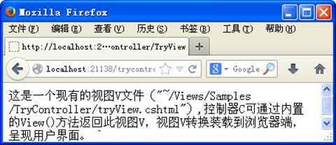

表 5‑12 控制C：接收客户端请求/实施服务端响应
| 案例 5‑9是控制器C的一个代码实例(该示例对应EDSS解决方案中EDSS/Controlls/Samples/TryController.cs文件）。 | |
| 案例 5‑9是控制器C的一个代码实例(该示例对应EDSS解决方案中EDSS/Controlls/Samples/TryController.cs文件）。 案例 5‑9 控制器C
案例 5‑9解释如下。 1. 控制器C的定义 l “public class TryControllerController:Controller”代码部分所示，控制器C本质上是自定义的类，是必须继承扩展自.Net内置的System.Web.Mvc.Controller类的类。控制器C的名称必须使用“Controller”作为后缀。但URL路由时，URL字符串的控制器部分将自动加上“Controller”后缀，而不需要事先包含。例如，URL字符串“http://localhost:21138/TryController/TryView”路由后访问的是服务器端名称为TryControllerController（而不是TryController）的控制器C的TryView()方法，传递给此方法的参数为空。 l代码“return this.View("~/Views/Samples/TryController/tryView.cshtml");”所示，控制器C可通过内置的View()方法返回一个现有的视图V（运行EDSS解决方案，浏览器地址栏中键入http://localhost:21138/TryController/TryView，将运行该控制器方法如图 5‑25所示。在此的现有视图V即"~/Views/Samples/TryController/tryView.cshtml"这一文件，视图V转换装载到浏览器端，呈现为用户界面视图V。  图 5‑25控制器C的运行结果示例：View()方法返回视图V l代码“return this.Content("这是返回字符串到浏览器端的示例（而不返回视图V），浏览器端将打开一个自已默认的界面呈现所返回的字符串");”所示，控制器C可通过内置的Content()方法返回字符串给浏览器端（而不返回视图V），浏览器端将打开一个自已默认的界面呈现所返回的字符串（运行EDSS解决方案，浏览器地址栏中键入http://localhost:21138/TryController/TryContent，将运行该控制器方法如图 5‑26所示）。  图 5‑26控制器C的运行结果示例：Content()方法返回字符串 l代码“return this.File(@"c:\NTDETECT.COM", "application/com", "NTDETECT.COM");”所示，控制器C可通过内置的File()方法返回服务器端的一个现有文件给浏览器端（而不返回视图V），浏览器端将打开一个自已默认的界面呈现所返回的文件（运行EDSS解决方案，浏览器地址栏中键入http://localhost:21138/TryController/TryFile，将运行该控制器方法如图 5‑27所示）。  图 5‑27控制器C的运行结果示例：File()方法返回文件 l代码“return this.Redirect("TryView");”所示，控制器C可通过内置的Redirect()方法重定向到其它URL（而不返回视图V），所转向的URL将根据自身的具体情形而返回相应的结果给浏览器端（运行EDSS解决方案，浏览器地址栏中键入http://localhost:21138/trycontroller/TryRedirect，将运行该控制器方法如图 5‑28所示，即所转向的URL“http://localhost:21138/trycontroller/TryView”的结果，所以，图 5‑28与图 5‑25是相同的）。  图 5‑28控制器C的运行结果示例：Redirect ()方法重定向到其它URL l控制器C还可接受浏览器端发送的数据、文件。 2. 控制器C的对象化运行 上述控制器C定义后，还需对象化运行，控制器C不会显式地对象化运行，而是当浏览器端发出的URL被路由到服务器端的控制器C时，该控制器C就被隐式地对象化运行。例如，运行EDSS解决方案，浏览器地址栏中键入http://localhost:21138/TryController/TryView，将对象化TryController控制器C，并运行其TryView（）方法，运行结果如图 5‑25所示（图 5‑26、图 5‑27、图 5‑28是类似的）。 |